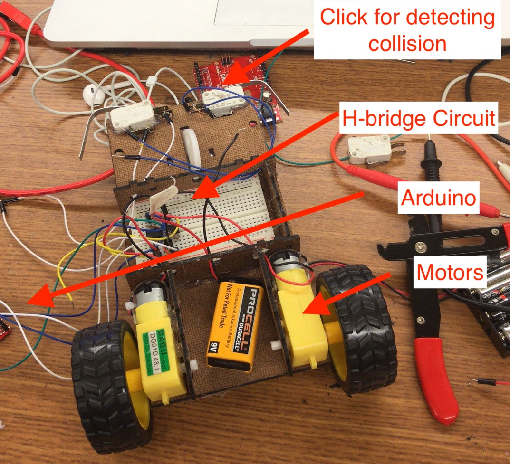
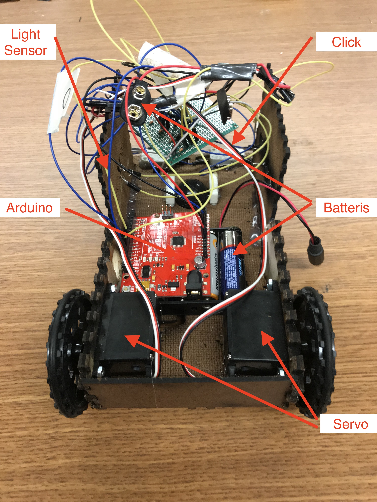
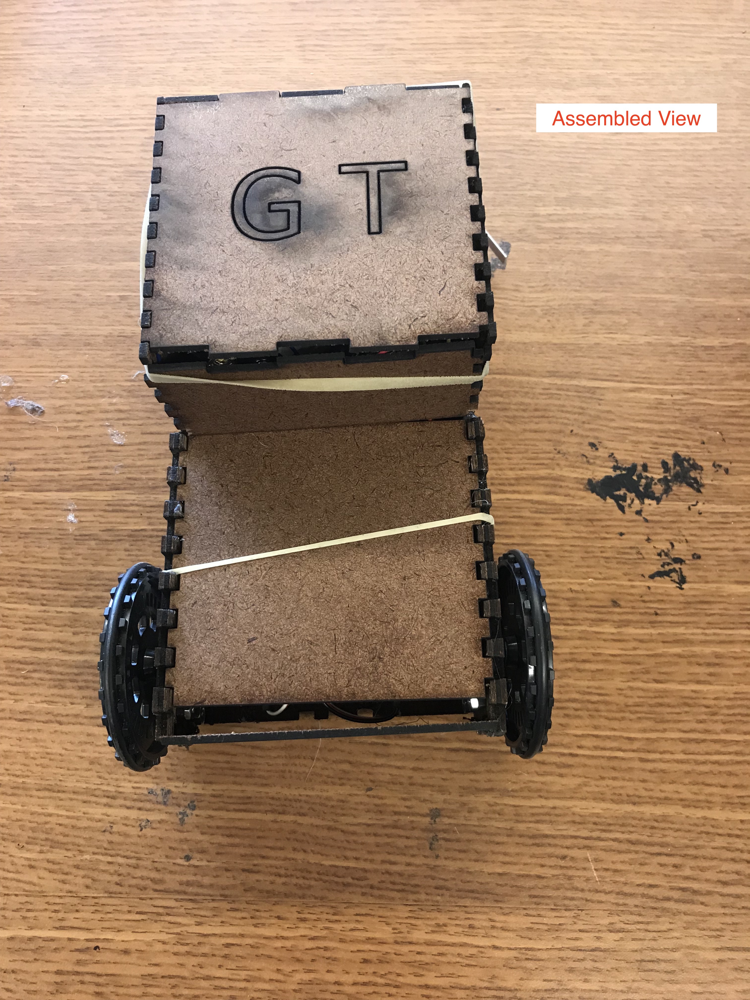

This is one of my favorite project, I spent 80+ hours in this project
Goal:
Hardware:
Version 1:
Below image shows autonomous car version 1
Below video shows the running test of version 1
Version 2:
Autonomous car version 2 inside view
Autonomous car version 2 outside view
Below video shows the running test of version 2
Why version 1 failed: